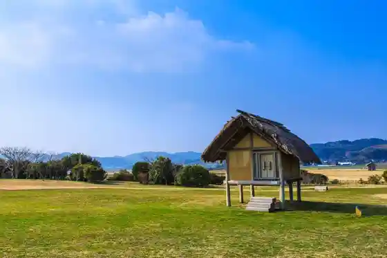
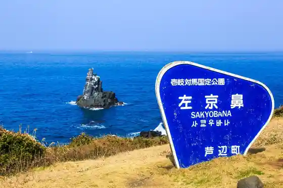
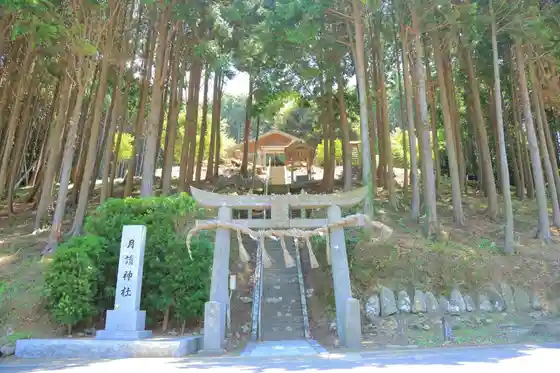

Kojima Shrine
Iki, Nagasaki · 0920-45-1263 · Official / source link
Omiyage Alley shikioriori
Iki, Nagasaki · 0920-45-4000 · Official / source link
Hara no Tsuji Iseki
Iki, Nagasaki · 0920-45-2065 · Official / source link

Sakyo Hana
Iki, Nagasaki · 0920-48-1130 · Official / source link

Tsukuyomi Shrine
Iki, Nagasaki · 0920-45-4145 · Official / source link

Oni no Sokuseki (Maki Saki Koennai)
Iki, Nagasaki · 0920-48-1130 · Official / source link
Yumoto Onsen
Iki, Nagasaki · Official / source link
Kumano Shrine
Iki, Nagasaki · 0920-45-4145 · Official / source link
Iki Chari
Iki, Nagasaki · Official / source link
Nishikihama Beach
Iki, Nagasaki · 0920-48-1130 · Official / source link
Katsumoto Castle Ruins
Iki, Nagasaki · Official / source link
Otoko Gaku Shrine
Iki, Nagasaki · 090-5400-2581 · Official / source link
Kakegi Burial Mound
Iki, Nagasaki · 0920-45-2728 · Official / source link
Ten Tenaga Otoko Shrine
Iki, Nagasaki · 0920-47-5748 · Official / source link
Iki no Dodai Ishi
Iki, Nagasaki · Official / source link
Matsunaga Memorial Museum
Iki, Nagasaki · 0920-44-6688 · Official / source link
Haruichiban no to
Iki, Nagasaki · 0920-48-1130 · Official / source link
Hase no Ganmyaku
Iki, Nagasaki · Official / source link
Sugoroku Burial Mound
Iki, Nagasaki · 0920-45-2728 · Official / source link
Hakozaki Hachiman Shrine
Iki, Nagasaki · 090-5400-2581 · Official / source link
Kushiyama Campground
Iki, Nagasaki · 0920-48-1130 · Official / source link
Tsushima Tsuka Burial Mound
Iki, Nagasaki · 0920-45-2728 · Official / source link
Otearai Mizu Falls
Iki, Nagasaki · Official / source link
Hime Shrine / to Hikawa Shrine
Iki, Nagasaki · Official / source link
Hei Shu Shrine
Iki, Nagasaki · 0920-45-1263 · Official / source link
Kokubunji Ato
Iki, Nagasaki · Official / source link
Ya Sa Shi Katana Shrine
Iki, Nagasaki · Official / source link
Shichiro Shrine
Iki, Nagasaki · Official / source link
Ashibe Sumiyoshi Shrine
Iki, Nagasaki · Official / source link
Yami Shrine
Iki, Nagasaki · Official / source link
Seibo Miya
Iki, Nagasaki · 0920-42-0914 · Official / source link
Shoni Suketoki no Haka
Iki, Nagasaki · Official / source link
Ikeda Hachiman Shrine
Iki, Nagasaki · Official / source link
Shoni Koen Campground
Iki, Nagasaki · 0920-48-1130 · Official / source link
Kagami Gaku Shrine
Iki, Nagasaki · Official / source link
Ankokuji
Iki, Nagasaki · Official / source link
Kuni Tsu I Kami Shrine
Iki, Nagasaki · 0920-47-0675 · Official / source link
Taka O So Shrine
Iki, Nagasaki · 0920-45-1263 · Official / source link
Sadakata Tsuriryo Gu Mise
Iki, Nagasaki · 0920-47-1313 · Official / source link
Fukae Shrine
Iki, Nagasaki · Official / source link
Kifune Shrine
Iki, Nagasaki · Official / source link
Kurosaki Hodai Ato
Iki, Nagasaki · 0920-48-1130 · Official / source link
Mizu Shrine
Iki, Nagasaki · Official / source link
to Ue Shrine
Iki, Nagasaki · 0920-45-4145 · Official / source link
Iki Shrine
Iki, Nagasaki · 0920-45-1276 · Official / source link
Ishida Tenma Shrine
Iki, Nagasaki · Official / source link